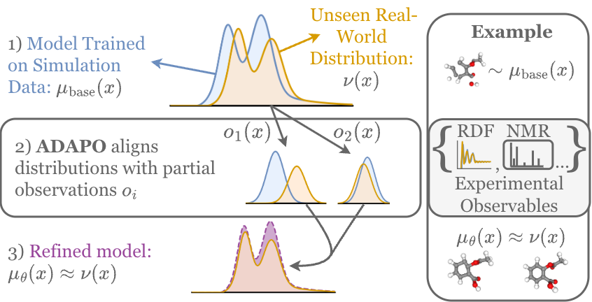
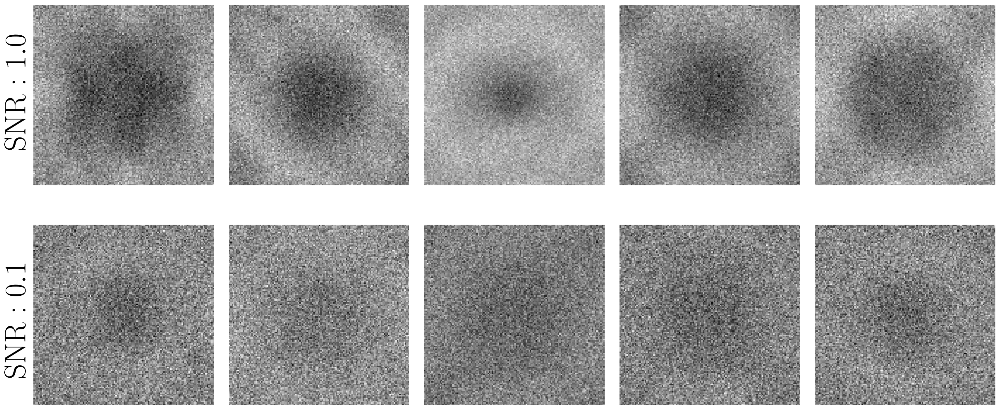
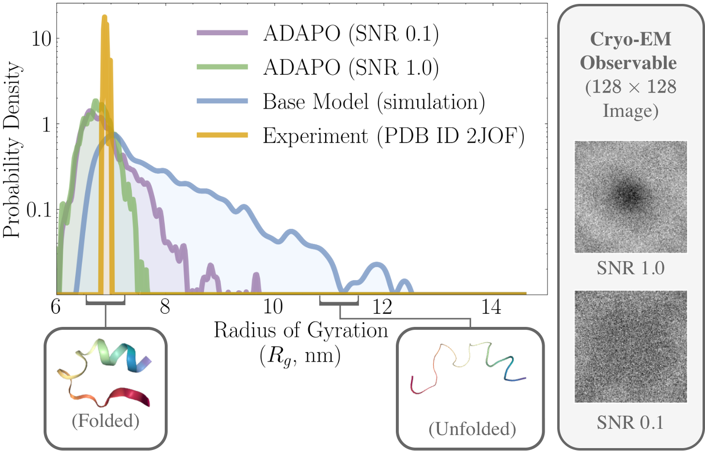
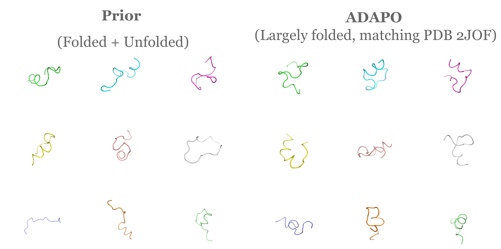
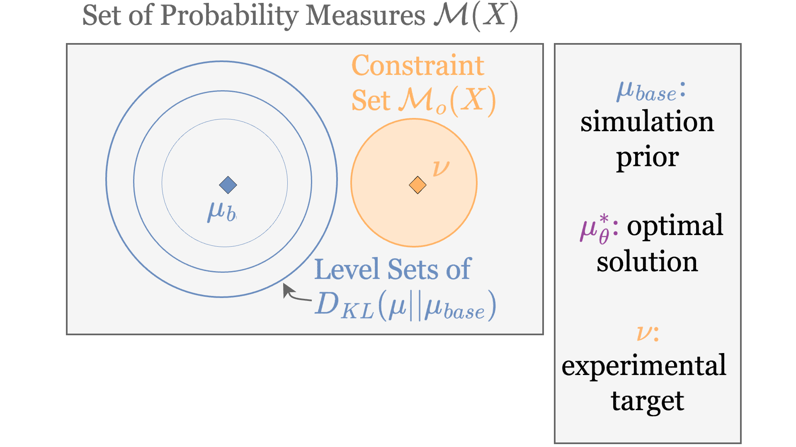

Simulations are cheap, and model the underlying state of the physical world, but incur modeling errors.
Experiments provide the ground truth, but are expensive, only providing lossy, incomplete measurements.
We want to bridge the gap between the two to build better computational models of the physical world.
We propose ADAPO, an adversarial algorithm that aligns generative models of underlying states to datasets of experimental observables.
We present the first algorithm that aligns generative models to the full distribution of multiple noisy experimental observations, without requiring explicit knowledge of joint structure.
Experimental measurements such as cryo-EM images are inherently noisy and capture only a partial view of the full molecular state. Below, cryo-EM micrographs of Trp-Cage (PDB ID: 2JOF) illustrate the challenge: each image is a noisy 2-D projection of the underlying 3-D atomic coordinates.

ADAPO takes these noisy, high-dimensional images and uses them to improve a generative model of the underlying atom positions. The base model, trained on classical MD simulations, oversamples the unfolded state. After alignment, ADAPO concentrates the distribution around the folded state reported experimentally in the PDB — having only seen the noisy cryo-EM images.

The generated structures correspondingly shift toward the folded conformations observed in the PDB.


We begin with a base distribution $\mu_{\text{base}}$, obtained from simulated data (e.g., classical molecular dynamics). Our goal is to construct a distribution $\mu_\theta$ that remains close to $\mu_{\text{base}}$ while matching experimentally observed statistics.
Let $\nu(x)$ denote the unknown full-state distribution of the system, and let $o^{(i)}$ be the $i$-th experimental observable. Crucially, we do not observe or sample from the full distribution $\nu(x)$. Instead, we only have access to samples from the induced experimental distributions $o^{(i)}_\# \nu$: the pushforwards of $\nu$ through the observables $o^{(i)}$. These correspond to the distributions of measured quantities obtained experimentally, without access to the underlying full system states.
We formulate this task as a constrained optimization problem (visualized above):
$$ \begin{aligned} \arg \min_{\mu_\theta} \quad & D_{\mathrm{KL}}(\mu_\theta \,\|\, \mu_{\text{base}}) \\ \text{s.t.} \quad & \mu_\theta \in \mathcal{M}_o(\mathcal{X}), \end{aligned} $$where the observable constraint set is $$ \mathcal{M}_o(\mathcal{X}) = \left\{ \mu \;:\; o^{(i)}_\# \mu = o^{(i)}_\# \nu \;\; \forall i \in I \right\}. $$ That is, $\mu_\theta$ must reproduce the experimental distributions for all observed quantities.
We solve this constrained problem by reformulating it as the following min–max optimization:
$$ \begin{aligned} \max_{\mu_\theta} \; \min_{(f^{(i)}) \in \mathrm{Lip}_1^{|I|}} \; \mathcal{L}\bigl(\mu_\theta, (f^{(i)}), \beta \bigr), \end{aligned} $$ $$ \begin{aligned} \mathcal{L}\bigl(\mu_\theta, (f^{(i)}), \beta \bigr) = {} & -D_{\mathrm{KL}}\bigl(\mu_\theta \,\|\, \mu_{\text{base}}\bigr) \\ & + \beta \sum_{i \in I} \left( \mathbb{E}_{(o^{(i)})_\# \mu_\theta}[f^{(i)}] - \mathbb{E}_{(o^{(i)})_\# \nu}[f^{(i)}] \right). \end{aligned} $$Analogous to GAN training, we alternate between updating the critic functions $f^{(i)}$ to distinguish generated from experimental observables, and updating $\mu_\theta$ to satisfy these learned constraints while remaining close to the base distribution. We prove in the full paper that this procedure converges to the target experimental observable distributions.
Obtaining large amounts of fully observed experimental data is expensive and simulations can incur modeling errors. ADAPO provides a general framework that leverages prior knowledge through simulation data while aligning to experimental data to learn accurate models of the physical world. For example, ADAPO could be scaled up to learn a generative model of the underlying atom positions of a protein from a large dataset of noisy cryo-EM images. We hope that frameworks like ADAPO that use experimental data also motivate the development of larger experimental datasets.
For more details, see our paper.